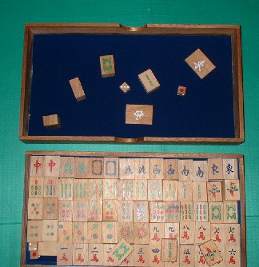
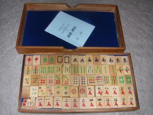
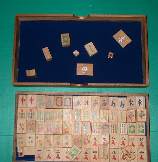
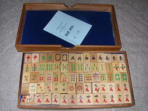

Tile colection 珍奇牌。 （3２）タイ製・木製牌 近年、タイで製造された木製牌。 キャラメル状に切り出した南洋材に、牌模様を彩色しただけの廉価品。サイコロも同様の木材でできている。 しかしNo.30で紹介した日本製木製牌とくらべると、かなりチャチい。まぁ土産物のレベルというところ。   牌身の厚みは１センチほどあるので実用不可能ではない。しかし軽すぎるので、重量牌に慣れた日本人には、使用しにくい。 まぁ、世の中には、こういう牌もあるということで。
近年、タイで製造された木製牌。 キャラメル状に切り出した南洋材に、牌模様を彩色しただけの廉価品。サイコロも同様の木材でできている。 しかしNo.30で紹介した日本製木製牌とくらべると、かなりチャチい。まぁ土産物のレベルというところ。   牌身の厚みは１センチほどあるので実用不可能ではない。しかし軽すぎるので、重量牌に慣れた日本人には、使用しにくい。 まぁ、世の中には、こういう牌もあるということで。
以前へ 以降へ 目次へ